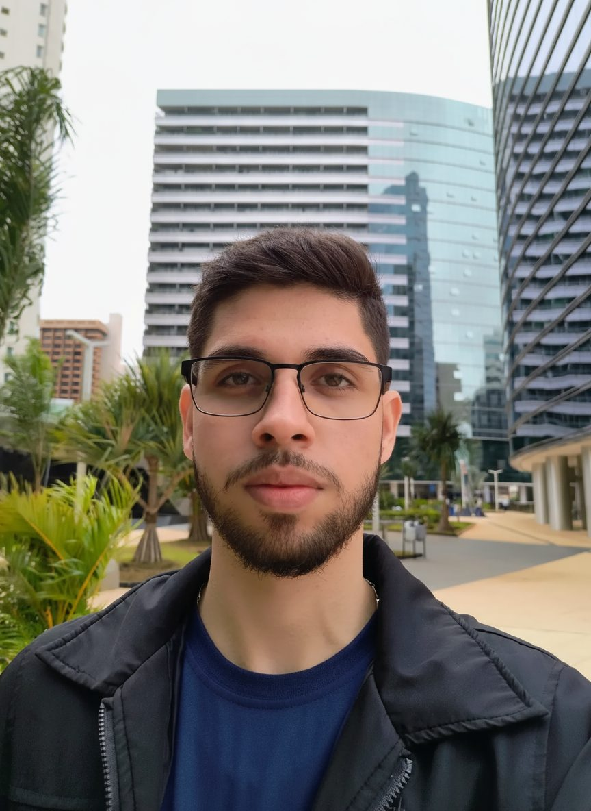

Danilo Silveira Ramos
Crio ambientes 3D que viram dados para treinar visão computacional em drones.
I build 3D worlds that become training data for computer vision on drones.
Estudo Tecnologias da Informação e Comunicação na UFSC e trabalho como Simulation & Dataset Developer na Global Drones.
I study Information and Communication Technologies at UFSC, in Brazil, and work as a Simulation & Dataset Developer at Global Drones.

Foto real com o tipo de anotação que um detector de objetos aprende. No trabalho, gero milhares de imagens assim, só que sintéticas.
A real photo with the kind of annotation an object detector learns from. At work I generate thousands of images like this, only synthetic.
Quem souAbout me
Sou estudante de Tecnologias da Informação e Comunicação na UFSC Araranguá, com formatura prevista para dezembro de 2028. Comecei em Engenharia de Computação, onde descobri a visão computacional, e hoje trabalho com ela na prática.
Na Global Drones, crio cenários 3D fotorrealistas em Unreal Engine 5 e Blender para gerar imagens sintéticas que treinam modelos de detecção para drones autônomos. Antes disso, criei modelos 3D de patologias para realidade mista no LabTeC/UFSC, avaliei respostas de IA em português e inglês na Outlier e produzi conteúdo de computação e matemática para o Quizlet.
I'm an Information and Communication Technologies student at UFSC Araranguá, Brazil, graduating in December 2028. I started out in Computer Engineering, where I found computer vision, and now I work with it every day.
At Global Drones, I build photorealistic 3D scenes in Unreal Engine 5 and Blender to generate synthetic images that train detection models for autonomous drones. Before that, I created 3D pathology models for mixed reality at LabTeC/UFSC, evaluated AI responses in Portuguese and English at Outlier, and wrote computing and math content for Quizlet.
- Onde estouBased in
- Araranguá, Santa CatarinaAraranguá, Santa Catarina, Brazil
- FormaçãoEducation
- Bacharelado em TIC, UFSC (previsão: dez. 2028)B.Sc. in Information and Communication Technologies, UFSC (expected Dec 2028)
- HojeNow
- Simulation & Dataset Developer na Global DronesSimulation & Dataset Developer at Global Drones
- IdiomasLanguages
- Português nativo e inglês profissionalPortuguese (native) and English (professional)
Objetivo profissionalCareer goal
Daqui a 10 anos, quero trabalhar com visão computacional aplicada a VANTs e ter minha própria empresa.
Ten years from now, I want to work in computer vision for drones and run my own company.
Sempre gostei de drones e aviação. Quando comecei a estudar visão computacional, ainda na Engenharia de Computação, ela virou a área de que eu mais gostava, e é onde esses dois interesses se encontram. A área da empresa ainda está em aberto: vou defini-la testando ideias ao longo do caminho.
I've always loved drones and aviation. When I started studying computer vision, back in Computer Engineering, it became my favorite field, and it's where those two interests meet. The company's field is still open: I'll define it by testing ideas along the way.
Plano de vooFlight plan
-
2026, agora2026, now
Dados sintéticos e visão computacional para drones na Global DronesSynthetic data and computer vision for drones at Global Drones
-
2027
Liderar um projeto de visão computacionalLead a computer vision project
-
Dez. 2028Dec 2028
Formatura em TIC e decisão sobre o mestradoGraduate and decide on a master's degree
-
2029–2035
Carreira em visão computacional aplicada a VANTsCareer in computer vision for drones
-
Até 2036By 2036
Empresa própriaMy own company
Formação e experiênciasEducation and experience
Experiência profissionalWork experience
-
dez. 2025 – hojeDec 2025 – present
Simulation & Dataset Developer
Global Drones
- Crio ambientes 3D fotorrealistas e cenários aéreos em Unreal Engine 5 para gerar datasets sintéticos de visão computacional.
- Modelo, texturizo e otimizo assets 3D (drones, aves e obstáculos) em Blender e Substance Painter.
- Gero imagens anotadas com variações de luz e clima para reduzir a diferença entre simulação e mundo real em um sistema de Detect and Avoid (DAA).
- Desenvolvi um pipeline em Python que exporta mais de 8.000 imagens anotadas no formato YOLO.
- Build photorealistic 3D environments and aerial scenarios in Unreal Engine 5 to generate synthetic computer vision datasets.
- Model, texture and optimize 3D assets (drones, birds and obstacles) in Blender and Substance Painter.
- Generate annotated images across lighting and weather conditions to narrow the sim-to-real gap for a Detect and Avoid (DAA) system.
- Built a Python pipeline that exports 8,000+ annotated images in YOLO format.
Por contrato de confidencialidade, este trabalho aparece só em texto.Under a confidentiality agreement, this work is described in text only.
-
fev. – ago. 2026Feb – Aug 2026
Multilingual AI Trainer
Outlier AI
- Avaliação multimodal em português e inglês: descrição de imagens e verificação de respostas de IA.
- Controle de qualidade e rotulagem de dados para pipelines de RLHF.
- Multimodal evaluation in Portuguese and English: image description and AI response verification.
- Quality assurance and data labeling for RLHF pipelines.
-
mar. 2024 – out. 2025Mar 2024 – Oct 2025
Pesquisador de iniciação científica e desenvolvedor 3DUndergraduate Researcher and 3D Developer
LabTeC, UFSC
- Criei mais de 20 modelos 3D de patologias para realidade mista no Microsoft HoloLens 2, no projeto HoloAnaPath.
- Otimizei os modelos para renderização em tempo real em hardware móvel, sem perder a precisão anatômica.
- Apresentei o projeto no Summit Cidades 2025 e na SNCT 2025.
- Created 20+ 3D pathology models for mixed reality on Microsoft HoloLens 2 for the HoloAnaPath project.
- Optimized them for real-time rendering on mobile hardware while keeping anatomical accuracy.
- Presented the project at Summit Cidades 2025 and SNCT 2025.
-
jul. – nov. 2024Jul – Nov 2024
Colaborador de conteúdo STEMSTEM Content Contributor
Quizlet
- Criação e revisão de conteúdo de computação e matemática com LaTeX e KaTeX, em português e inglês.
- Created and reviewed computing and math content with LaTeX and KaTeX, in Portuguese and English.
Formação acadêmicaEducation
-
2023 – dez. 20282023 – Dec 2028
Bacharelado em Tecnologias da Informação e ComunicaçãoB.Sc. in Information and Communication Technologies
Universidade Federal de Santa Catarina (UFSC), Araranguá. Formatura prevista para dezembro de 2028.Federal University of Santa Catarina (UFSC), Araranguá, Brazil. Expected to graduate in December 2028.
- Foco em inteligência artificial, pipelines de geração de dados e engenharia de software.
- Antes da transferência para TIC, cursei Engenharia de Computação, com base em C/C++ e sistemas embarcados.
- Focus on artificial intelligence, data generation pipelines and software engineering.
- Transferred from Computer Engineering, which gave me a base in C/C++ and embedded systems.
ProjetosProjects
-
Pipeline de dados sintéticos para voo autônomoSynthetic data pipeline for autonomous flight
Cenários 3D em Unreal Engine 5 com exportação automática de anotações em Python.3D scenes in Unreal Engine 5 with automated annotation export in Python.
Unreal Engine 5, Python
-
HoloAnaPath
Modelos 3D de patologias para o ensino de medicina em realidade mista.3D pathology models for teaching medicine in mixed reality.
Blender, Substance Painter, HoloLens 2
-
Plataforma de ensino on-line (Meninas Digitais)Online learning platform (Meninas Digitais)
Plataforma full-stack de cursos on-line.Full-stack platform for online courses.
TypeScript, NestJS, Next.js, Docker
-
KetMaker
Simulador de circuitos quânticos.Quantum circuit simulator.
Python, Flask
-
Sistema antigelo aeronáuticoAircraft anti-icing system
Sistema antigelo para aeronaves, programado em C em um microcontrolador PIC.Anti-icing system for aircraft, programmed in C on a PIC microcontroller.
C, PIC
Outros projetos noMore projects on GitHub.
Cursos e certificadosCourses and certificates
- Introduction to Prompt Engineering
- Artificial Intelligence: Your Ally in the Java and Cloud Journey
- Java Programming Language Fundamentals
- Java Control Structures
EventosEvents
- Summit Cidades 2025: apresentação do HoloAnaPathSummit Cidades 2025: presented HoloAnaPath
- SNCT 2025 (Semana Nacional de Ciência e Tecnologia): apresentação do HoloAnaPathSNCT 2025 (Brazil's National Science and Technology Week): presented HoloAnaPath
- Startup Weekend: duas participaçõesStartup Weekend: took part twice
- ACIVA Career Fair 2024
Minhas competênciasSkills
Visão computacional e dadosComputer vision and data
- Geração de dados sintéticosSynthetic data generation
- Anotação no formato YOLOYOLO-format annotation
- OpenCV
- Avaliação multimodal e RLHFMultimodal evaluation and RLHF
- Controle de qualidade de dadosData quality assurance
Simulação e 3DSimulation and 3D
- Unreal Engine 5
- Blender
- Substance Painter
- NVIDIA Isaac Sim
- Realidade mista (HoloLens 2)Mixed reality (HoloLens 2)
ProgramaçãoProgramming
- C
- C++
- Python
- Java
- SQL
- TypeScript
- LaTeX
Back-end e ferramentasBack end and tools
- Git e GitHubGit and GitHub
- Docker
- Linux e BashLinux and Bash
- FastAPI
- PostgreSQL
- APIs RESTREST APIs
Drones e embarcadosDrones and embedded
- Pilotagem de drones em campoField drone piloting
- C para microcontroladoresC for microcontrollers
- Assembly
ComportamentaisSoft skills
- Autonomia no trabalho remotoAutonomy in remote work
- Atenção a detalhesAttention to detail
- Comunicação técnica em português e inglêsTechnical communication in Portuguese and English
- Apresentação em eventosPresenting at events
Meu desenvolvimento profissionalProfessional development
O que ainda preciso aprender para chegar ao meu objetivo, e como pretendo fazer isso.What I still need to learn to reach my goal, and how I plan to do it.
-
Python avançado e deep learning (PyTorch)Advanced Python and deep learning (PyTorch)
Cursos e projetos próprios treinando detectores de objetosCourses and side projects training object detectors
2026–2027
-
IA embarcada: NVIDIA Jetson e TensorRTEdge AI: NVIDIA Jetson and TensorRT
Rodar modelos em hardware de drone e medir a latênciaRun models on drone hardware and measure latency
2027
-
Robótica de voo: ROS 2 e PX4Flight robotics: ROS 2 and PX4
Integrar percepção e controle em simulação antes do voo realConnect perception and control in simulation before real flights
2027–2028
-
Matemática para visão: álgebra linear e geometria de câmerasMath for vision: linear algebra and camera geometry
Disciplinas da graduação e estudo por conta própriaUniversity courses and self-study
Até 2028By 2028
-
Regulamentação de drones (ANAC e DECEA)Drone regulations in Brazil (ANAC and DECEA)
Estudar as regras de cadastro e de operaçãoStudy the registration and operating rules
2027
-
Liderança e gestão de projetosLeadership and project management
Liderar um projeto de visão computacionalLead a computer vision project
2027
-
Negócios: validar ideias, finanças e vendasBusiness: validating ideas, finance and sales
Startup Weekends, cursos de empreendedorismo e testes em pequena escalaStartup Weekends, entrepreneurship courses and small-scale tests
ContínuoOngoing
-
Inglês fluenteFluent English
Prática diária e uma certificação internacionalDaily practice and an international certificate
Até 2028By 2028
-
Mestrado (em avaliação)Master's degree (under consideration)
Decidir até a formatura se faço mestrado em visão computacional ou robóticaDecide by graduation whether to pursue one in computer vision or robotics
2028
ContatoContact
Quer conversar sobre uma vaga, um projeto ou uma pesquisa? Me escreva.Want to talk about a role, a project or research? Get in touch.